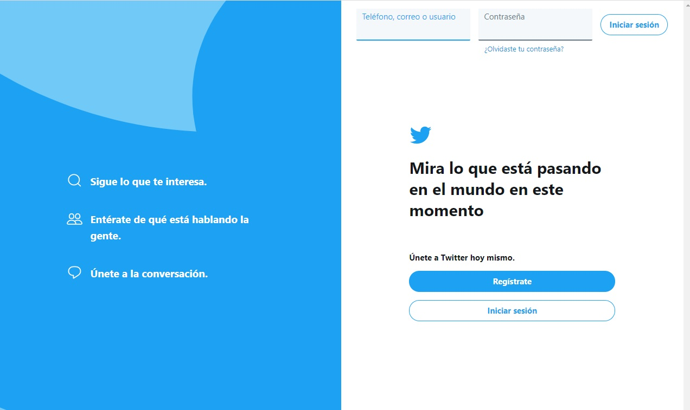
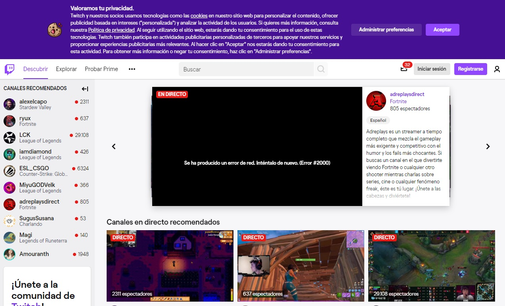

Wikipedia es una web de información de diversas cosas así como historia o datos sobre personas.
Twitter es una red social online en la que te puedes comunicar con gente y relaccionarte con ellos viendo lo que publican
Twitch es una red social online de directos sobre videojuegos o de simplemente hablar con tus seguidores.
Youtube es una red social de videos o de directos donde se puede ver tanto música como videos informativos.